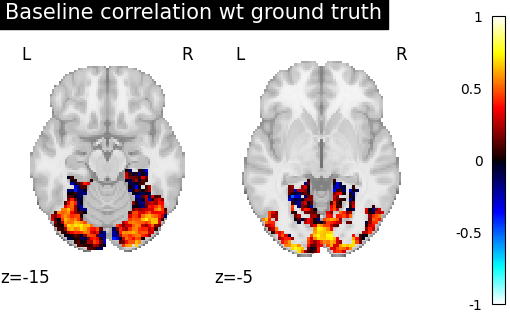
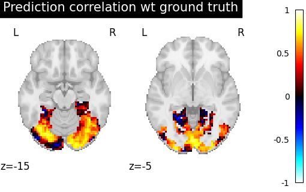

Note
Go to the end to download the full example code.
Pairwise functional alignment on a ROI.¶
In this tutorial, we focus here on a single Region of Interest (ROI). On this ROI, we try to find a transformation from source to target subject that captures the variability between their signal on data they share. We then use this transformation to predict new contrasts for the target subject.
We mostly rely on python common packages and on nilearn to handle functional data in a clean fashion.
To run this example, you must launch IPython via ipython
--matplotlib in a terminal, or use jupyter-notebook.
Retrieve the data¶
In this example we use the IBC dataset, which include a large number of different contrasts maps for 12 subjects. We download the images for subjects sub-01 and sub-02 (or retrieve them if they were already downloaded). Files is the list of paths for each subjects. df is a dataframe with metadata about each of them. mask is an appropriate nifti image to select the data.
Extract a mask for the visual cortex from Yeo Atlas¶
First, we fetch and plot the complete atlas
from nilearn import datasets
from nilearn.image import load_img, new_img_like, resample_to_img
from nilearn.plotting import plot_roi
atlas_yeo_2011 = datasets.fetch_atlas_yeo_2011()
atlas_yeo = atlas_yeo_2011.thick_7
atlas = load_img(atlas_yeo)
# Select visual cortex, create a mask and resample it to the right resolution
mask_visual = new_img_like(atlas, atlas.get_fdata() == 1)
resampled_mask_visual = resample_to_img(mask_visual, mask, interpolation="nearest")
# Plot the mask we will use
plot_roi(
resampled_mask_visual,
title="Visual regions mask extracted from atlas",
cut_coords=(8, -80, 9),
colorbar=True,
cmap="Paired",
)
Dataset created in /home/runner/nilearn_data/yeo_2011
Downloading data from ftp://surfer.nmr.mgh.harvard.edu/pub/data/Yeo_JNeurophysiol11_MNI152.zip ...
...done. (0 seconds, 0 min)
Extracting data from /home/runner/nilearn_data/yeo_2011/d7a5390bfb7686fb41fa64cc2ba058d0/Yeo_JNeurophysiol11_MNI152.zip..... done.
<nilearn.plotting.displays._slicers.OrthoSlicer object at 0x7f0600a8ef10>
Definine a masker¶
We define a nilearn masker that will be used to handle relevant data. For more information, visit : ‘http://nilearn.github.io/manipulating_images/masker_objects.html’
from nilearn.maskers import NiftiMasker
roi_masker = NiftiMasker(mask_img=resampled_mask_visual).fit()
Prepare the data¶
For each subject, we will use two series of contrasts acquired during two independent sessions with a different phase encoding: Antero-posterior(AP) or Postero-anterior(PA).
# The training fold, used to learn alignment from source subject toward target:
# * source train: AP contrasts for subject sub-01
# * target train: AP contrasts for subject sub-02
source_train = df[df.subject == "sub-01"][df.acquisition == "ap"].path.values
target_train = df[df.subject == "sub-02"][df.acquisition == "ap"].path.values
# The testing fold:
# * source test: PA contrasts for subject sub-01, used to predict
# the corresponding contrasts of subject sub-02
# * target test: PA contrasts for subject sub-02, used as a ground truth
# to score our predictions
source_test = df[df.subject == "sub-01"][df.acquisition == "pa"].path.values
target_test = df[df.subject == "sub-02"][df.acquisition == "pa"].path.values
/home/runner/work/fmralign/fmralign/examples/plot_pairwise_roi_alignment.py:93: UserWarning: Boolean Series key will be reindexed to match DataFrame index.
source_train = df[df.subject == "sub-01"][df.acquisition == "ap"].path.values
/home/runner/work/fmralign/fmralign/examples/plot_pairwise_roi_alignment.py:94: UserWarning: Boolean Series key will be reindexed to match DataFrame index.
target_train = df[df.subject == "sub-02"][df.acquisition == "ap"].path.values
/home/runner/work/fmralign/fmralign/examples/plot_pairwise_roi_alignment.py:102: UserWarning: Boolean Series key will be reindexed to match DataFrame index.
source_test = df[df.subject == "sub-01"][df.acquisition == "pa"].path.values
/home/runner/work/fmralign/fmralign/examples/plot_pairwise_roi_alignment.py:103: UserWarning: Boolean Series key will be reindexed to match DataFrame index.
target_test = df[df.subject == "sub-02"][df.acquisition == "pa"].path.values
Define the estimator, fit it and predict¶
To proceed with alignment we use the class PairwiseAlignment with the visual mask we created before. We use the scaled orthogonal method, common in the literature under the name hyperalignment. As we work on a single ROI, we will search correspondence between the full data of each subject and so we set the number of cluster n_pieces to 1. We learn alignment estimator on train data and use it to predict target test data.
from fmralign.pairwise_alignment import PairwiseAlignment
alignment_estimator = PairwiseAlignment(
alignment_method="scaled_orthogonal", n_pieces=1, mask=roi_masker
)
alignment_estimator.fit(source_train, target_train)
target_pred = alignment_estimator.transform(source_test)
/home/runner/work/fmralign/fmralign/fmralign/_utils.py:69: UserWarning:
Some parcels are more than 1000 voxels wide it can slow down alignment,especially optimal_transport :
parcel 1 : 6631 voxels
warnings.warn(warning)
Score the baseline and the prediction¶
We use a utility scoring function to measure the voxelwise correlation between the prediction and the ground truth. That is, for each voxel, we measure the correlation between its profile of activation without and with alignment, to see if alignment was able to predict a signal more alike the ground truth.
from fmralign.metrics import score_voxelwise
# Now we use this scoring function to compare the correlation of aligned and
# original data from sub-01 made with the real PA contrasts of sub-02.
baseline_score = roi_masker.inverse_transform(
score_voxelwise(target_test, source_test, roi_masker, loss="corr")
)
aligned_score = roi_masker.inverse_transform(
score_voxelwise(target_test, target_pred, roi_masker, loss="corr")
)
/home/runner/work/fmralign/fmralign/fmralign/metrics.py:62: ConstantInputWarning: An input array is constant; the correlation coefficient is not defined.
pearsonr(X_gt[:, vox], X_pred[:, vox])[
Plotting the measures¶
Finally we plot both scores.
from nilearn import plotting
baseline_display = plotting.plot_stat_map(
baseline_score, display_mode="z", vmax=1, cut_coords=[-15, -5]
)
baseline_display.title("Baseline correlation wt ground truth")
display = plotting.plot_stat_map(
aligned_score, display_mode="z", cut_coords=[-15, -5], vmax=1
)
display.title("Prediction correlation wt ground truth")
- 
- 
/opt/hostedtoolcache/Python/3.11.10/x64/lib/python3.11/site-packages/nilearn/plotting/img_plotting.py:1317: UserWarning: Non-finite values detected. These values will be replaced with zeros.
safe_get_data(stat_map_img, ensure_finite=True),
We can see on the plot that after alignment, the prediction made for one subject data, informed by another subject are greatly improved.
Total running time of the script: (0 minutes 21.990 seconds)